Практичні курси · журнал «ДентАрт» 2023 №1
Тимчасова коронка невідкладного виготовлення у разі перелому зуба
Temporary emergency crown for a fractured tooth
Досить часто причиною невідкладних ситуацій, з якими пацієнти звертаються до клініки, є перелом зуба. Перед тим як почати діяти, треба вирішити, що взагалі можна зробити для пацієнта: чи потрібне екстрене лікування, чи достатньо у нас відведеного в розкладі часу, щоб упоратися з невідкладною ситуацією.
Клінічна ситуація
40-річний чоловік звернувся в клініку зі скаргою на перелом зуба 16. Картина була досить зрозумілою: перший моляр, раніше лікований ендодонтично, мав велику композитну реставрацію без перекриття горбика; було виявлено перелом піднебінної стінки. Лінія перелому розміщувалася набагато нижче ясенного краю. Болю пацієнт не відчував і ні на що більше не скаржився. У таких випадках лікування можна проводити неквапом, у плановому порядку. Але ми зіткнулися з проблемою «логістичного» характеру: пацієнт не мав змоги часто приїжджати в клініку. Тому вирішили зробити все протягом першого візиту. Оскільки лінія перелому проходить нижче ясенного краю, клінічну коронку довелося подовжити.
Хід невідкладного лікування
Без використання адгезиву з композиту зробили своєрідний прямий wax-up зуба, щоб зняти з нього невеликий силіконовий відбиток (силіконовий ключ) для виготовлення провізорної коронки. Після хірургічного подовження клінічної коронки зуб легко ізолювали рабердамом.
Після переліковування кореневого каналу в піднебінному корені сформували простір для штифта, підібрали та встановили волоконний штифт LuxaPost (DMG) відповідного розміру. Важливо: видаляємо тільки гутаперчу й герметик, без препарування здорової тканини, бо її видалення ослабить зуб. Ми не надаємо каналу форму штифта, а навпаки — підбираємо штифт, що відповідає формі каналу.
Після установки кільцевої матриці зробили тотальне протравлювання з подальшим нанесенням адгезиву подвійного затвердіння (Luxabond-Total Etch, DMG). Для фіксації штифта та відновлення втрачених тканин використали лише один матеріал — композит подвійного затвердіння з діоксидом цирконію (LuxaCore Z Dual, DMG). Засвітивши матеріал, вдалося моментально запобігти його розтіканню, після чого залишили реставрацію самостійно повністю затвердіти. Виступаючу частину штифта відразу видалили і зняли рабердам.
Зуб одразу відпрепарували для встановлення повної коронки. Матеріал кукси за консистенцією дуже схожий на дентин, тому під час препарування різниця між композитом і дентином не відчувається. Напівпостійну коронку виготовили легко — ввели матеріал LuxaCrown (DMG) у силіконовий ключ, ізолювавши опорний зуб гліцерином. Потім силікон видалили, зробили фінішну обробку та полірування. Краї залишили короткими, щоб було місце для загоєння ясен, а після коригування оклюзії коронку зафіксували цементом. Пацієнтові дали вказівки з чищення зубів та дезінфекції.
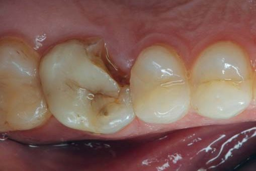
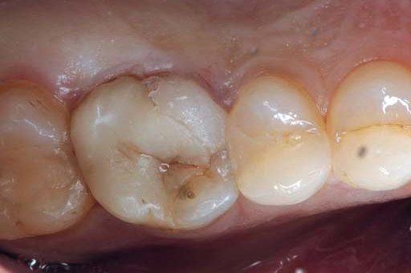
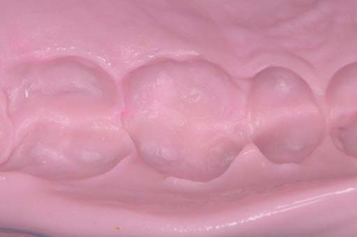
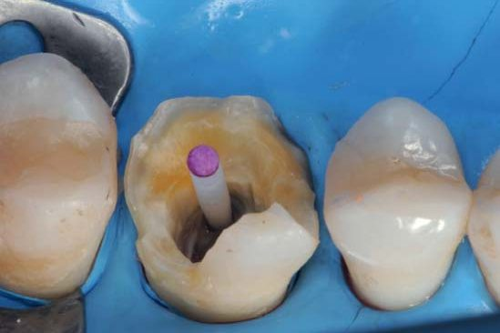
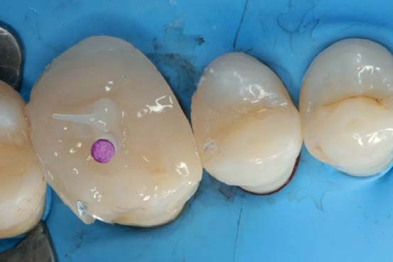
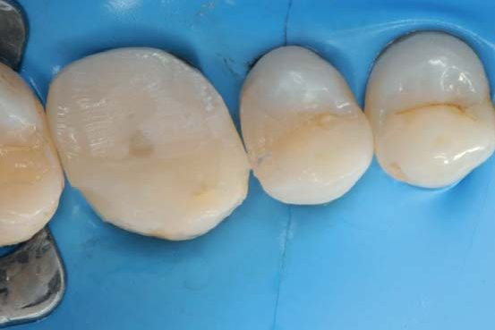
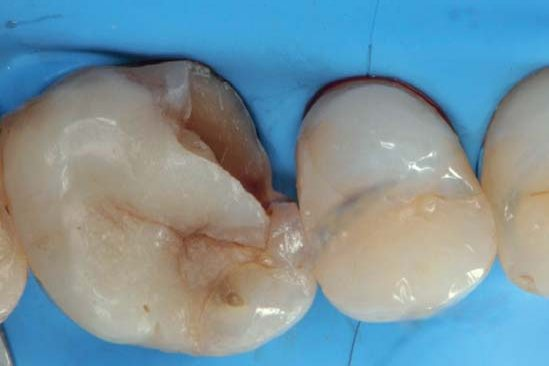
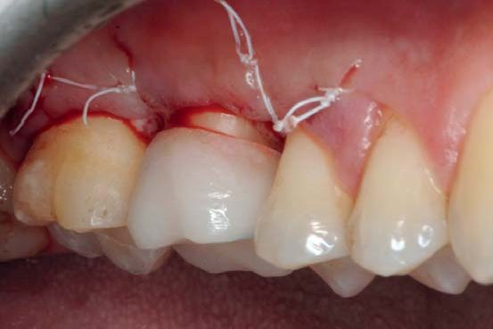
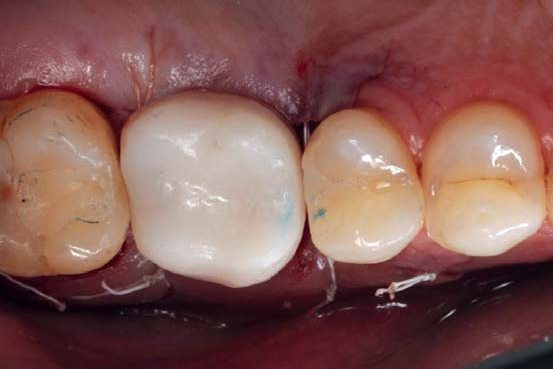
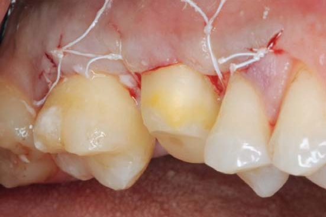
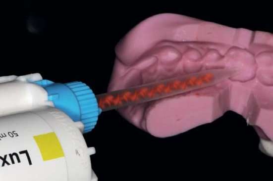
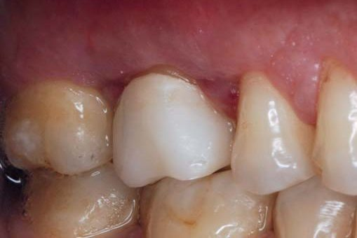
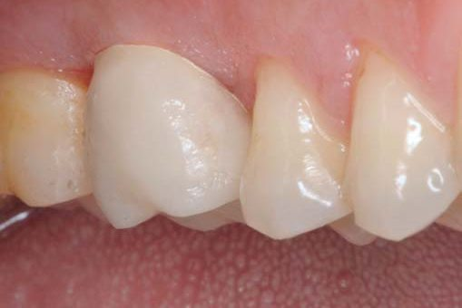
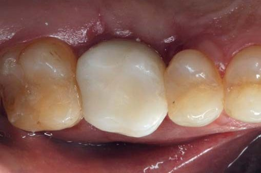
Клінічні етапи: початковий перелом зуба 16 та силіконовий ключ; хірургічне подовження коронки й ізоляція рабердамом; установка волоконного штифта LuxaPost; кукса з LuxaCore Z Dual; препарування, напівпостійна коронка LuxaCrown; зняття швів на 10-й день і контроль через 2 місяці.
Результат і висновки
Через 10 днів зняли шви — м'які тканини вже наполовину загоїлися. Протягом цього періоду не було причин хвилюватися, адже швидка у виготовленні, міцна та зносостійка напівпостійна коронка точно не підведе. Через 2 місяці тканини мали здоровіший вигляд. Пацієнт попросив відкласти зняття остаточного відбитка з «логістичних» міркувань, і ми впевнені, що з такою тимчасовою коронкою все буде гаразд — потрібно лише правильно чистити зуби та регулярно приходити на перевірку.
Завдяки ефективній організації робочого процесу і використанню якісних нових матеріалів можна легко впоратися з подібною ситуацією навіть без запису пацієнта на окремий час: лише за одне відвідування вдається взяти ситуацію під контроль, і пацієнт залишається задоволеним.
Література
- Grandini S., et al. Fatigue resistance and structural integrity of different types of fiber posts. Dent Mater J. 2008.
- Ferrari M., et al. Post placement affects survival of endodontically treated premolars. Randomized controlled trial. J Dent Res. 2007.
- Juloski J., et al. The effect of ferrule height on stress distribution within a tooth restored with fibre posts and ceramic crown: a finite element analysis. Dent Mater. 2014.
- Juloski J., et al. Four-year Survival of Endodontically Treated Premolars Restored with Fiber Posts. Randomized controlled trial. J Dent Res. 2014.